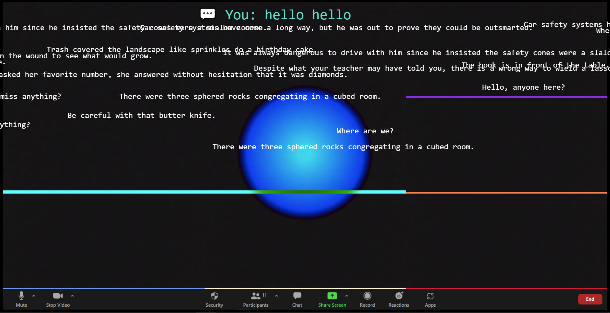
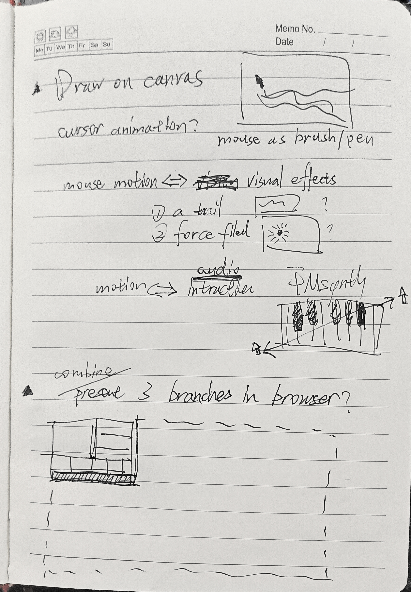
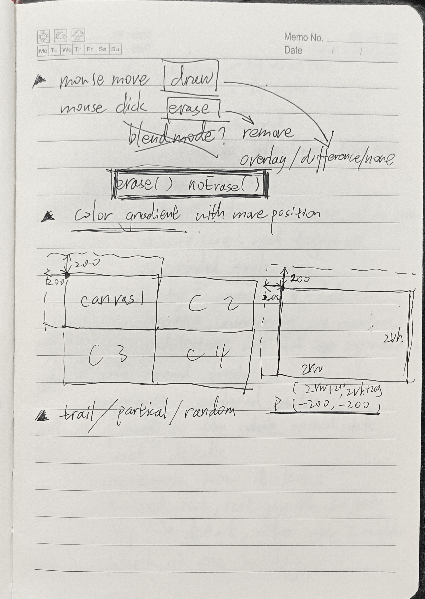

Back to meeting!
I was surprised to see the diversity of my peer's works, and they give me a lot of inspiration. One is Jared's work, he designed some sound interactions along with the player's motions. Although mine is 2D, I think this idea would apply to mouse movements in my interface very well. The current audio interaction is one dimension. What if the users can have more sophisticated audio interactions, like different pitches or velocities according to the mouse's speeds and positions? The other one is TianningMiao's work, where she used the mouse as a brush, I think it might be fun to give users more control over visuals and offer them the chance to customize the interface.
Based on the feedback I had from the last branch, I made the font size bigger for "your comment" and added a chat icon in front of it. 
Adding drawing and erasing function to the mouse.
I did some experiments on assigning the erasing function to mouse pressed and the drawing function to mouse up, or the other way around. I decided to let it draw while the mouse is pressed. For, in this way, two interactions combined with the drag event.
It took me some time, and I still failed to achieve those planned audio interactions. The idea was to use the cursor's position as inputs, while it dragging an element, pitch or modulation would interact with coordinates.
 
Overall, the idea that using the mouse as a brush/eraser worked in some way.
I think it works especially well with those draggable elements, for players
have to click their mice to move those elements and, in the meantime, draw on
the interface. Interactions riched here with only one event. However, it might
still have space for designing a control panel, on which the users can customize
brush colors, size, effects, and so on. Also, it's such a shame that I didn't manage
to achieve the audio interactions. Otherwise, the same event, which is mouse down and
move, would have three aspects of interactions, drag an element, draw, and audio effects.
Why do I think richer interactions for a single input matter here? This interface
simulates those activities we do in the virtual space in an intensified and heightened way.
You might minimize one interface over another and toggle between them. What if all the
activities happen at one time with one mouse click. Your identities and representations
tear into parts here, or, in some way, multiplied, intensified, and heightened here.
That's why I think richer interaction over one input would serve my initial idea well.